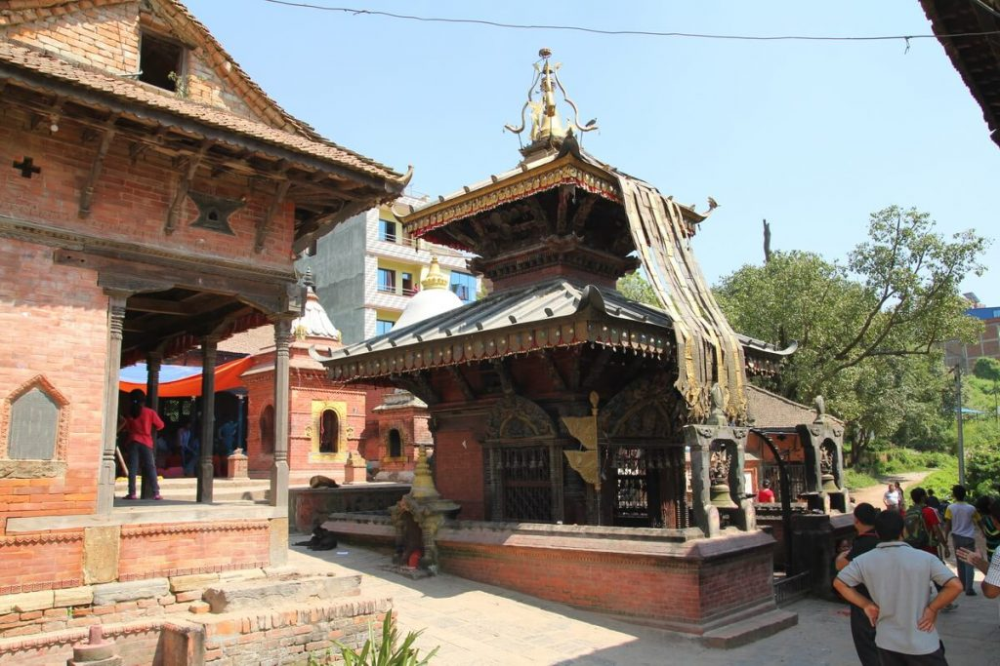
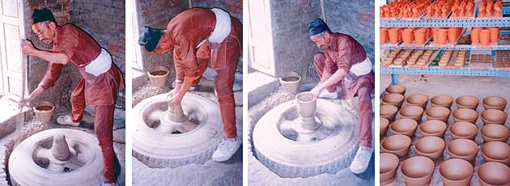

Introducing Thimi

Madhyapur Thimi is a municipality in Bhaktapur District in the Bagmati Zone of central Nepal. Thimi lies between Kathmandu, Lalitpur and Bhaktapur in the Kathmandu Valley. It is one of the ancient, cultural and historical places along the trade route from Bhaktapur to Kathmandu. Like other old cities this city is also situated on elevated land and therefore one has to climb up to reach this city. Thimi occupies an area of 2 square kilometres and is administratively divided into 17 wards.
Malla period is known as golden age of the Kathmandu Valley (Nepal Mandala) for the cultural development witnessed in this period. Among the mediaeval settlements, a typical Newar town, the least affected by modern lifestyle, Thimi has its own identity. Splendid arts and crafts of Malla period which is existing till today introduce the living culture of Thimi. Practices of erecting temples and statues in the town are not of today but started in 7th century, which is known by found inscription of Lichhavi period in Thimi.
This Medieval town is also known as Madhyapur, which was used only after 670 Nepal Era. It is said that Thimi was used to be called as "Thee" only, which means gem in Nepalbhasa. It was called so because this town is located at the middle of three major cities of the Valley: Kantipur, Bhaktapur and Lalitpur and beautified and increased the value of valley. As resident of Yen (Kathmandu) is called Yami and that of Bhonta(Banepa) Bhomi, similarly Thimi used to refer residents of "Thee" which later was given the name of the town. In addition, "Madhyapur" is Sanskrit means the same thing, i.e., a mid-town.
Madhyapur Thimi Municipality

Madhyapur Thimi Municipality which was established before 5 years includes Chapahcho, Balkumari, Nagadesh, Bode and Lokanthali. It is some 10 km. east from Kathmandu and three km. west from Bhaktapur. It is situated at the altitude of 1325 meters and speread over the area of 11.47 sq. km., which has around 48,000 inhabitants. Amongst which most of which are the Newars. The literacy percent of the city is 48. Municipality is divided in 17 municipals wards. The division is as follows-
a)Ward 1,2,3 - Bodey, Tigani, Nikoshira, NilBarahi
b)Ward 4,5,6 - Nagadesh
c)Ward 7,8,9,10 - Chapahcho Area
d)Ward 11,12,13,14 - Balkumari Area
e)Ward 15,16,17 - Gathhaghar, SanoThimi , Kaushaltar and Lokanthali